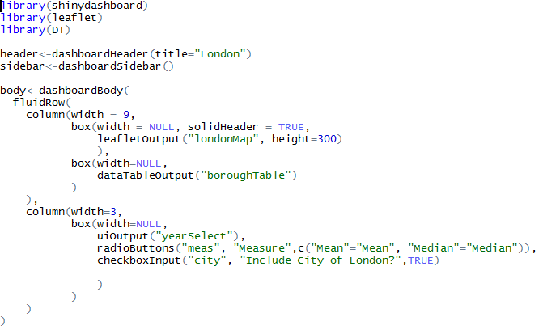

Lately I’ve been enjoying learning how to use Shiny, and experimenting with making a fairly basic app, and wanted to develop my skills further. I’d been looking at an example app from the Shiny website which shows live bus locations in the US, refreshing at short intervals. It looked fairly complex at first, so I was pretty happy when, within 48 hours I’d managed to recreate something of similar complexity, so here’s your guide on how you can quickly get up to speed using interactive reactive maps in Shiny.

If you follow all of my steps, you will learn:
- The basics of geographic information systems (GIS)
- Spatial mapping in R
- How to use the R pipe (%>%) operator
- How to use some features of the dplyr package
- How to make choropleth maps
- How to use the Leaflet JavaScript library in R
Here I’m presuming you already have a reasonable working knowledge of Shiny, and are at least at the point of having created your own app and run some of the examples. I’m also presuming that, like me, you have no prior knowledge of GISs, visualising spatial data, or Leaflet.
Step 1: really get to know the bus dashboard example

The bus dashboard example can be downloaded here. After playing around with the app in a browser, I printed out all of the code and annotated it with a few different colour pens. I went back and forth, writing notes and drawing diagrams until I understood what all the different components did and how they interacted with each other. This took a few hours, but the time invested was well worth it, as the design of the components of my app later felt pretty easy despite my lack of experience in making complex apps.
Step 2: read up on visualising spatial data in R
Next, go through the Introduction to visualising spatial data in R by Robin Lovelace and James Cheshire, and be sure to run all the code examples. It’s a great introduction to the topic and covers all the relevant background you need, without being verbose. You might want to have a quick read up about geographical mapping systems, but don’t worry too much about in-depth understanding; a basic knowledge of the fact that different systems exist will do.
Step 3: read up on Leaflet for R
The official site of Leaflet for R tells you everything you need to know to get started. You don’t need to read everything here, but as a bare minimum make sure you check out the sections labelled “Introduction”, “The Map Widget”, and “Shiny Integration”.
Step 4: get some GIS boundary files
So now you know that the basics, you need some data to work with. We’ll start off with the boundaries for our maps. I had a few false starts and red herrings, but eventually found the boundary file I was after at the London Datastore. Once I’d downloaded the data and selected the relevant files, I did a quick plot to check it was what I was after.
Step 5: get some data
Again, I went to the London Datastore, but this time I downloaded data on the average income of tax payers by London borough. This was really easy to merge with my GIS boundary files, using the dplyr package to do SQL-style joins.
Step 6: code!

Finally, it was time to pull it all together. I started off by writing a basic Shiny UI file, with placeholders for content, and then started filling in the different sections. First I added a static map, and then proceeded to adapt my code so that the map would change based on the user’s selections.
Step 7: refine
This is the step that I’m still at now. Whilst coding the map, my design changed to take into account the capabilities of Shiny and Leaflet. Originally I’d planned to use Shiny’s animated slider to scroll through the different years, but it became quickly apparent that this would render too slowly to be visually appealing. Although I offset some of this slowness by using the leafletProxy function to only redraw the coloured tiles but keep the underlying map, there was still some delay.
With the resources I’ve linked to above and the occasional bit of Googling when things don’t quite work as expected, it’s fairly easy to get up and running making interactive maps with Shiny and Leaflet, so give it a go!
Click here to view source code on GitHub.
[Edited to add: I’ve been thinking about how I’d improve my code, and came to the conclusion that whilst this functions as a good introduction to a number of topics, if my goal was solely to create a choropleth of an area, I’d use something more lightweight than Leaflet to accomplish this.]